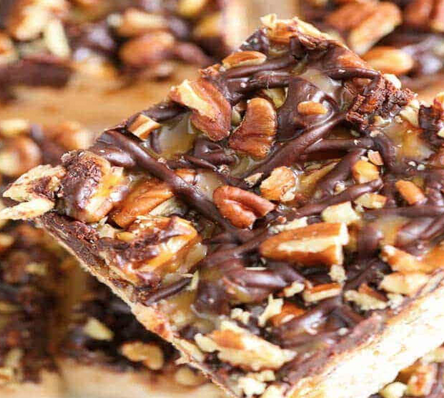
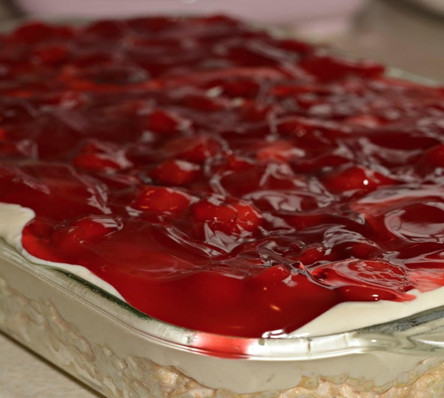
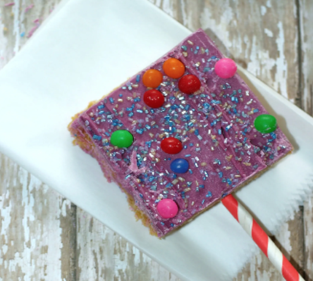

RICE KRISPIES SNACK RECIPIES
Are you ready to Snap! Crackle! Pop!? These Rice Krispies recipes transform a simple ingredient into creative, multi-occasion snacks that fit seamlessly into your busy, DIY routines. Rediscover the joy of making treats that are fun to share, and get inspired to personalize your own creations.
Discover the fun of crafting your own crunchy combos. For even more creative ideas beyond this page, follow us on Instagram at ‘Snap! Crackle! Pop!’ and connect with a community of snack lovers!
GOOEY TURTLE SNAP

INGREDIENTS
- ¼ cup butter
- 7 cups miniature marshmallows divided
- 7 cups Rice Krispies cereal
- 1 ⅓ cups chopped toasted pecans divided
- 1 cup semi sweet chocolate chips
- ¼ cup heavy whipping cream
- 5 ½ ounces caramel bits or 5 ½ ounces caramels unwrapped
- 2 ½ tablespoons heavy whipping cream
INSTRUCTIONS
- Melt caramel bits and 2 ½ tablespoons heavy cream in the microwave for 60-90 seconds (stirring every 30 seconds) until smooth.
- Press into a well-greased 9×13 pan (or slightly smaller if you prefer a thicker Rice Krispie).
- In a separate bowl, combine ¼ cup heavy cream and chocolate chips. Microwave at 50% power for 90 seconds (stirring every 30 seconds) until smooth.
- Drizzle ½ of the caramel and ½ of the chocolate over the Krispies.
- Top wi
- Drizzle remaining caramel and chocolate.
- Cool completely. Cut into squares and serve
CHERRY CHEESECAKE CRACKLE

INGREDIENTS- 6 cup Rice Krispies Cereal
- 3 tablespoons butter
- 10.5 oz marshmallows
- 8 oz softened cream cheese
- 14 oz sweetened condensed milk
- 1 tsp vanilla
- 21 oz cherry pie filling
INSTRUCTIONS
- Grease a 13x9 pan with butter.
- In a microwave safe bowl, combine marshmallows and butter.
- Heat until puffed and butter is melted stirring every 20 seconds.
- Add the cereal and stir to coat.
- Press mixture into pan and allow to cool.
- Beat softened cream cheese, condensed milk and vanilla.
- Pour on top of the cooled treats and chill a few hours.
- Top with cherry pie filling and refrigerate.
KEY LIME POP PIE
 INGREDIENTS
INGREDIENTS- 5 cups crispy rice cereal
- 8 whole graham crackers, chopped and divided
- 5 tablespoons unsalted butter
- 10 cups miniature marshmallows, divided
- 6 key limes, juiced and zested (divided, see notes in recipe)
- 4 ounces white chocolate or vanilla almond bark
- ½ teaspoon coconut oil or vegetable oil
INSTRUCTIONS
- Spray a 9×13-inch baking dish with non-stick baking spray. Set aside. In a large bowl stir together the crispy rice cereal and 5-6 chopped graham crackers, set aside.
- In a large sauce pan, melt butter over low heat. Once butter has melted, stir in 8 cups marshmallows. Continue cooking over low heat, stirring constantly, until marshmallows and butter are fully melted together.
- Remove from heat and stir the lime zest and juice from 4 key limes (approximately 1 1/2 tablespoons juice and 2 teaspoons of zest) into melted marshmallow mixture.
- Stir cereal/graham cracker mixture and remaining 2 cups of marshmallows into melted marshmallows mixture, stirring until well combined. Note: It is ok if the additional 2 cups of marshmallows only partially melt.
- Using a rubber spatula, sprayed with non-stick cooking spray, spread marshmallow covered cereal treats evenly into prepared 9×13-inch baking dish. Quickly press remaining chopped graham crackers onto the top of the prepared treats.
- PIn a small microwave safe bowl, combine white chocolate and oil. Microwave for 30 seconds. Remove melted chocolate from microwave and stir. Return to microwave and microwave for an additional 30 seconds to continue melting, if needed.
- Stir the zest from 1-2 key limes (approximately 1 teaspoon of zest) into the white chocolate mixture. Drizzle melted white chocolate evenly over the top of the prepared cereal treats.
- Allow treats to sit for at least 30 minutes to 1 hour before slicing into bars. Store cereal treats in an air tight container for 4-5 days.
PURPLE PASSION POW

INGREDIENTS- 5 cups mini marshmallows
- 6 cups Rice Krispies cereal
- 3 tablespoon butter
- 1/2 cup of Trader Joe’s Cookie Butter (or peanut butter)
- 1 (14 oz) pkg of Wilton Candy Melts (we used purple)
- Candy topping of your choiceg
INSTRUCTIONS
- Over a medium-low heat, melt the butter. Add in the marshmallows and stir them until melted.
- Remove from heat and add in the cookie butter or peanut butter. Stir until well combined.
- Pour in the cereal and stir until the cereal it thoroughly coated with the marshmallow mixture. Transfer the mixture into a 9×13 pan and press it down.
- Under low heat, melt the candy in a double boiler or the microwave. Stir well. Do not use high heat or the candy will turn into a hard ball.
- When fully melted, pour it over the Rice Krispies and spread it over the Rice Krispies mixture evenly. Add your candy and sprinkles.
- Let it sit until hardened, then cut into squares.